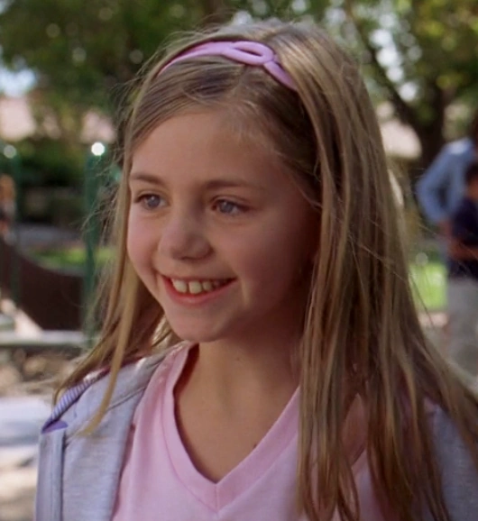

Here is a list of Mike's known family members:
Stacey Ehrmantraut-Stacey Ehrmantraut is the widow of Matt Ehrmantraut, Mike Ehrmantraut's son, in *Better Call Saul*. She is also the mother of Kaylee Ehrmantraut, Mike’s beloved granddaughter. After Matt’s death, Stacey leans on Mike for emotional and financial support, and Mike becomes deeply involved in helping her raise Kaylee. Stacey's character primarily represents Mike's softer side, as he cares deeply about her and Kaylee's well-being, often going to great lengths to provide for them, even if it means engaging in dangerous activities. She plays a significant role in shaping Mike's motivations throughout the series.
Matt Ehrmantraut(no picture/deceased)-Matt Ehrmantraut is Mike Ehrmantraut's son in *Better Call Saul* and is mentioned briefly in *Breaking Bad*. He was a police officer, like his father, but he was killed under tragic circumstances. Matt's death is a key part of Mike's backstory and deeply affects him throughout the series. It’s revealed that Matt was an honest cop who refused to participate in the corruption within his precinct. The other corrupt officers pressured him to take bribes to prove his loyalty, but despite Mike’s advice to go along with it to protect himself, Matt hesitated. This hesitation ultimately led to his murder by the very officers he worked with, who feared he might expose their corruption. Matt's death haunts Mike, fueling his determination to protect his family, especially Stacey and Kaylee, and driving him into the world of crime to ensure their financial security.
Kaylee Ehrmantraut-Kaylee Ehrmantraut is the granddaughter of Mike Ehrmantraut in Better Call Saul and Breaking Bad. She is the daughter of Matt Ehrmantraut and Stacey Ehrmantraut. Kaylee is one of the most important people in Mike’s life, and much of his actions throughout both series are driven by his desire to protect and provide for her future. Mike’s deep bond with Kaylee is often shown in tender moments where he spends time with her, such as taking her to the park or helping her build a treehouse. His involvement in illegal activities, including working for criminal organizations, is largely motivated by his wish to financially secure her future after the loss of her father. Kaylee represents the innocence that Mike strives to protect in a dangerous world, and she humanizes his character, showing a softer, more caring side amidst the criminal dealings he gets involved in.He was going to leave her money, but was it confiscated by the feds.
